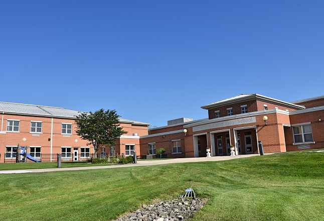
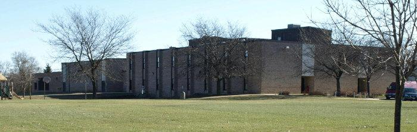
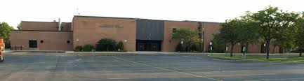
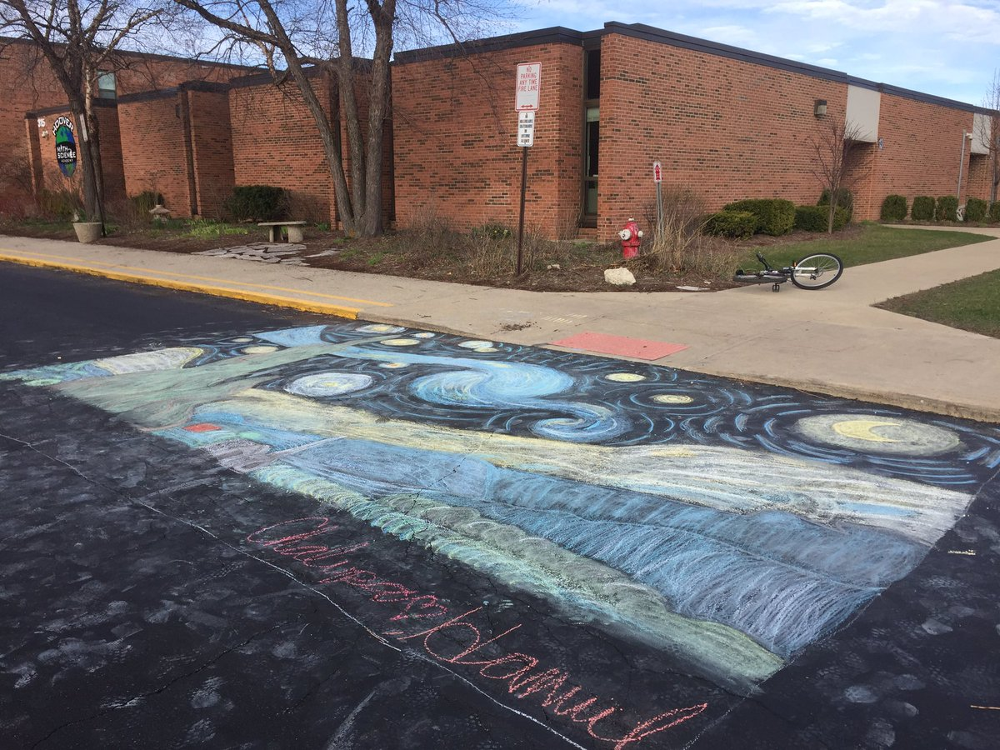
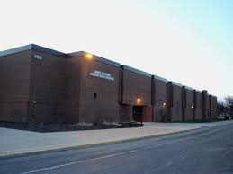
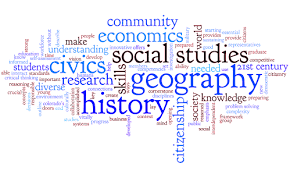

School is a big part of my life - it's a big part of nearly everybody around the globe's life. And I can't say that I love school, but it is nevertheless really important, and has taught me a lot, both academically and socially. Some of my habits today developed from school, and I met my best friends in school.
This webpage will review my tumultous schooling history, and how all of the six schools I have attended have shaped me to become who I am today, and who I will be in the future.
I went to four different elementary schools. They were Cloverdale (for kindergarten), John Muir Literacy Academy (for first grade), Albert Einstein Elementary School (for gardes two, three, and half of four), and Hoover Math and Science Academy (from half of fourth grade through sixth grade).
In Cloverdale, I remember my teacher, Mrs. Muñoz. She taught me many life skills, such as always speaking the truth, not to steal, and basically just introduced me to how school would be. She was a very nice person, who always brought treats for us during one of her Jewish holidays. I still remember when she brought steaming hot latkes and dreidles for us to play with during Hannukah. Kindergarten in Cloverdale was fun, and I will miss those good old times.
Cloverdale Elementary School, Carol Stream, IL
I remember very little of my one year at John Muir Literacy Academy. We had moved from Bloomingdale, IL to Hoffman Estates, and this was to be my new school. I don't even remember my teacher's name, and John Muir is only significant in my mind because it is where I met my best friend for the rest of elementary school - Aditya. Aditya was a really smart kid, but he was down to earth, unlike some of the other geniuses in my class. We quickly hit off, and were inseperable until he moved when I was in fourth grade. But I would say that my experience at John Muir was, although unmemorable, not bad either.
John Muir Literacy Academy, Hoffman Estates, IL
Einstein was my favorite elementary school, by far. I had my favorite teacher, Ms. Astrug, for one-and-a-half years, and I really enjoyed my time there. In second grade, I was new to the school, and just began to make new friends. But my third grade, I had really fit into the school, and made it my second home. Ms. Astrug really understood us third graders, and made class fun and engaging for us. I think everyone of us in her third grade class still remembers her today, and how positively she affected us.
I was only completed half of fourth grade year in Einstein before we moved, and part of me wished that we didn't back then. I was leaving my favorite teacher of all time, and my friends that I had made for two-and-a-half years behind. But now when I reflect on my move, and I think it led to something as great as my Einstein experience.
Albert Einstein Elementary School, Hanover Park, IL
The last elementary school I went, and the one I graduated from, is the one which is in my memory that most. I made some of my best friends that I have today in Hoover, and the Homeroom 211 Squad are still tight to this day. I learnt a lot at Hoover, from math and science skills (shout out to Mrs. Villareal who really made me recognize my talent for math), but also social and survival skills when we went on a field trip to Camp Duncan, an experience which profoundly changed my outlook on the natural world. Hoover taught me a lot, and most of what I learned has still stuck with me to this day, just the friends I made over there will be with me forever.
Hoover Math and Science Academy, Schaumburg, IL
Unlike my tumultous elementary school journey, I went to the same junior high for both of my years of middle school - Jane Addams Junior High.
Jane Addams Junior High, Schaumburg, IL
Addams served as a very important stepping stone between my kiddie years in elementary school to a more mature young adult in high school for me.
I was also in the Dsicovery Gifted program, and I was with like minded people for almost every class. Some of my best friends are from my Discovery class in Addams.
I learned even more in Addams, I loved my electives - STEM, Spanish, and Media. This was the first time that I got to choose my classes, and I loved the experience of learning something I did not learn before. In fact, I loved Spanish and the coding we did in STEM 1 so much that I'm continuing those elective courses in high school right now: I am enrolled in Spanish 2 for Freshmen and AP Computer Science Principles. My interest in both of these courses developed in junior high, and this is another reason I have to be grateful for this short yet sweet time in my life.
My love for social studies was also discovered in junior high. I was the school History Bee Champion in both seventh and eighth grade (in seventh grade I competed in the National finals in Atlanta), and was the school National Geographic Geography Bee champion (I was a state finalist). And the person who made me realize my prowess in social studies was none other than my own social studies teacher, Mr. Glesne. He helped me recognize my potential, and with his and my parents' guidance, I went to the finals of these prestigious tournaments. I have a lot to owe Addams, and I will miss it and all it had to offer for me forever.
Addams made me discover my aptitude for social studies, and I competed under the Addams banner in several social studies competitions.
| Period | Class | Teacher | Comments |
|---|---|---|---|
| 1 | STEM 1 | Mrs. Burke | I loved STEM 1 because of its amazing projects. We built game boards, created playgrouynds using 3-D modeling software, and programmed robots. |
| 2 | Algebra 1 | Mrs. Vitols | Math was great. Mrs. Vitols was a really nice teacher who explained everything so well. She was one of the reasons that I had an A+ in the class. |
| 3 | Lunch | NA | I had lunch with most of my Discovery friends, and we had a great time relaxing together and enjoying our lunches. I had some great memories from lunch, and I will miss sitting in the cafeteria with my friends. |
| 4 | Science | Ms. Zydlo and Ms. Tracey | Ms. Zydlo and Ms. Tracey were the coolest teachers that I had. They made science hilarious, but also taught me important concepts of biology and chemistry that still help me today. |
| 5/6 | Language Arts | Mrs. Collins | Mrs. Collins is not like most English teachers. She was nice, funny, and told us stories about her life that kept me entertained. She also taught me how to write powerfully and capture the hearts of the audience. I will always remember the projects which she assigned us, which made me a better writer and better person. |
| 7 | Physical Education | Mr. Hunt | I had a lot of fun in Mr. Hunt's gym class. We played basketball, hockey, soccer, and had a great time. |
| 8 | Spanish 1A | Ms. Larsen | Ms. Larsen was an extremely nice teacher too. She introduced me to Spanish, a language with seemed challenging but interesting, and made me fall in love with the language. One of the reasons I am taking Spanish in high school now is because of her. |
| 9 | Social Studies | Ms. Demos | Social Studies was by far my most favorite class. Ms. Demos is the one who made me realize my aptitude for history, and got me started in the History Bee, something that I would excel at. Her class was fun and engaging, and everyone loved her. |
| Period | Class | Teacher | Comments |
|---|---|---|---|
| 1 | Social Studies | Mr. Glesne | Mr. Glesne, in short, was awesome. He made me continue my passion for history, and got me started in the Geogrpahy Bee as well, an event in which I would have success as well. He was funny, and was probably the most popular teacher in Addams. |
| 2 | Media | Mr. Truppa | Media was a new class for me, and I instantly loved it. I loved altering images on Adobe Photoshop, and my favorite unit was when we created a Music Video Mash-Up. I loved Media, and Mr. Truppa was a great teacher as well. |
| 3 | Geometry | Mrs. Grabarek | Geometry was by far the hardest class for me in junior high. I found theorums difficult but enticing, and I learned a lot from Ms. Grabarek's class. Also, I made some of my best friends in her class as well. |
| 4 | Lunch | NA | I had lunch with all of my Discovery friends again, and we had more great times socializing and having lunch together. |
| 5/6 | Language Arts | Mrs. Collins | This was my second year of having LA with Mrs. Collins - she moved up with our Discovery class to teach eighth grade, and she knew my strengths and weaknesses in English clearly. She assigned us many projects which helped me become a better writer and a better individual. Mrs. Collins will always be in my memory, and she has made me the writer I am today. |
| 7 | Science | Ms. Sloma | Science in eighth grade was a continuation of last year: it was awesome! We learned physics and astronomy concepts in Ms. Sloma's class, and she taught us this new material in an engaging manner, helping us master basic science concepts that we need in high school. |
| 8 | Spanish 1B | Ms. Larsen | I was one of the luckiest kids in Addams - I had Ms. Larsen for the second year in a row. Ms. Larsen continued her kind approach of teaching Spanish, and I had a lot of fun in her class building an understanding of this beautiful language. Ms. Larsen made me fall in love with Spanish, and I am eternally grateful to her for that. |
| 9 | Physical Education | Mrs. Patano | Mrs. Patano is one of the nicest gym teachers that you will ever meet. She was a soccer player, like me, and she was so kind and compassionate that she made running wind sprints tolerable. |
And now I am in highschool. After eight years of schooling, I had finally reached the final stage of my school journey. I had graduated from Addams as a smarter, more athletic, and overall better person than I was before, and now I was ready to take on high school. That was a few months ago, in the summer, and now I love this new aspect of my life. I love all of my classes: Spanish, Algebra 2, English, Biology, Freshman Foundations, Physical Education, AP Seminar, and certainly AP Computer Science Principles! And I especially like our block scheduling, in which we have "A" and "B" days. We have four classes on "A" days, and the other four classes on "B" days. I like this idea of having a class a maximum of three times a week because it lets me do my "A" day homework on the "A" day, and allows me to check over the homework on the "B" day, and then I can turn it in on the next "A" day. Basically, the block scheduling allows me to have two days to do my homework - awesome!
Another reason that love Hoffman Estates High school because of how many different ways it is possible to get involved. I am a proud member of the Boys Freshman A Soccer Team, and I am interviewing to be the Winter Musical Producer (I'm crossing my fingers right now, hoping that I get that pretigious position!), and a member of the chess team. Hoffman Estates does an awesome job of preparing us for the real world, in which getting involved in the community is vital for success and happiness. I love this high school and everything it stands for, and I hope I will feel this way about HEHS for all four years of my remaining high school journey.
| Block (Period # followed by which day) | Class | Teacher | Comments |
|---|---|---|---|
| 1A | Spanish 2 | Mr. Rodriguez | Mr. Rodgriguez has continued my fascination with the Spanish language. He teaches us in an immersive enironment, and shares his genuine love of the language with us. |
| 2A | Algebra 2/Pre-calculus | Mrs. Olson-Brady | Mrs. Olson-Brady has assured of my continued success in math. I love how she explains math problems so well, and how thoroughly she prepares us for tests. I am succeeding in her class, and I have her to thank for that. |
| 3A | Honors English | Mrs. Gilbert | Mrs. Gilbert is an amazing teacher. She reminds me of Mrs. Collins day by day, and challenges us with interesting projects and great books. We are currently reading To Kill A Mockingbird, and that book is one of the greatest that I have ever read. |
| 4A | Honors Biology | Mrs. LeVanti | Honors Bio is one of my hardest classes, but it's an interesting subject, and I was drawn to it since the first day. Mrs. LeVanti teaches biology with a passion that I admire, and I really enjoy her class and the labs which she assigns us. |
| 1B | Freshman Foundations | Mr. Michie | Mr. Michie is the most energetic teacher that I have ever had. In Freshman Foundations, he helps us adjust to our new big school, and so far he has made me feel comfortable in what seemed a strange place. Mr. Michie is smart, funny, and absolutely bubbly with energy - he's great! |
| 2B | Freshman Wellness | Mr. Moersch | Some may be intimidated when they see Mr. Moersch, the Varsity football coach, but he's a nice guy and I've had fun exercising in his class. |
| 3B | AP Seminar | Mr. Beers and Dr. Davey | AP Seminar may be one of the strangest classes that I have ever taken. Mr. Beers was cracking jokes on the first day, and Dr. Davey was speaking to us in complicated words. But the class progressively got less weird and more engaging. We watched documentaries about global warming and how our planet is getting destroyed, and we visited an organic farm to see their role in combatting global warming. I enjoy this class, and cannot wait to see what other surprises it has in store for me. |
| 4B | AP Computer Science Principles | Mr. Krzankowski | And finally AP Comp. Sci. It's my favorite class, and one reason is because of Mr. K. He is funny, witty, and is a great teacher who taught me to make, well, all of this! I love going to his class every "B" day, and I can't wait to find out what new programs we will learn every day. |
Hoffman Estates High School - I've not been here for long, but I know it will change my life for the better in my future
I dedicate this webpage to Ms. Astrug, for helping me realize my potential as a bright student and a good kid. Thank you for everything that you taught me Ms. Astrug! I will never forget you and the fun times our third grade class had together.